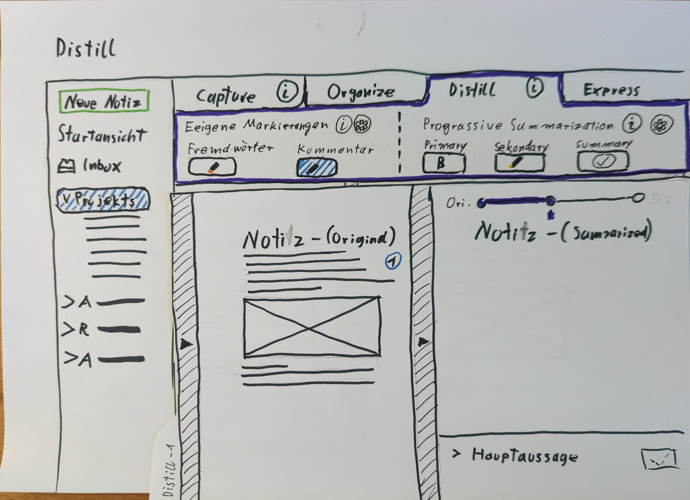
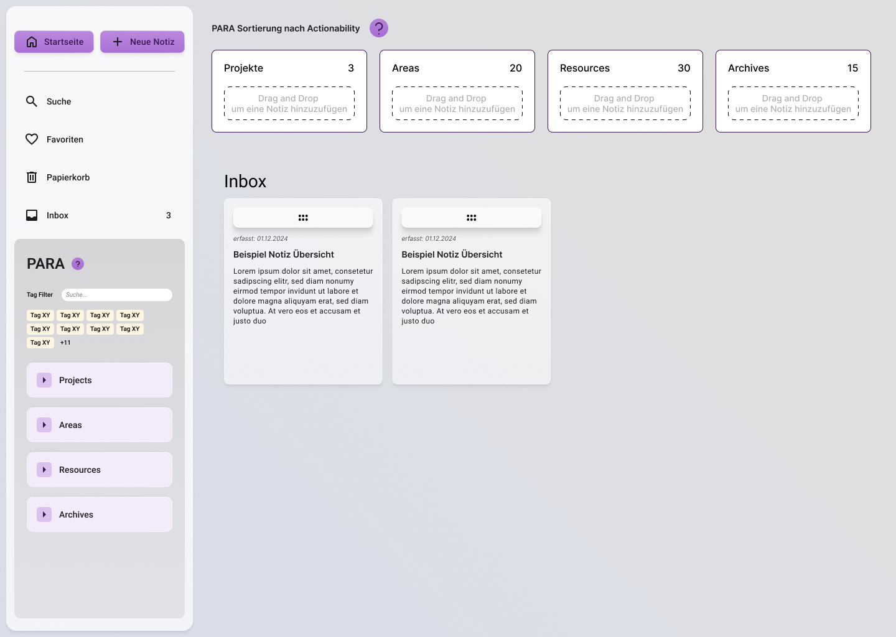
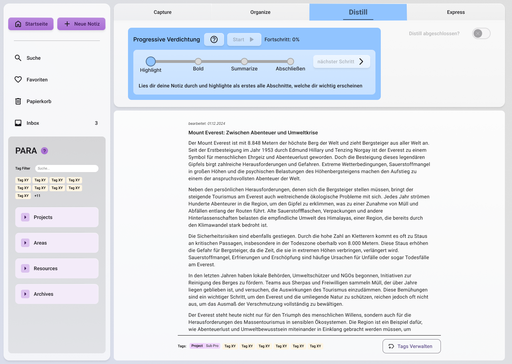
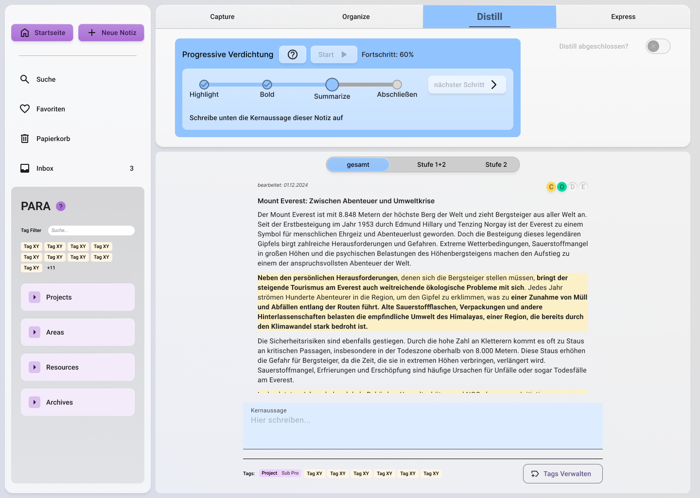
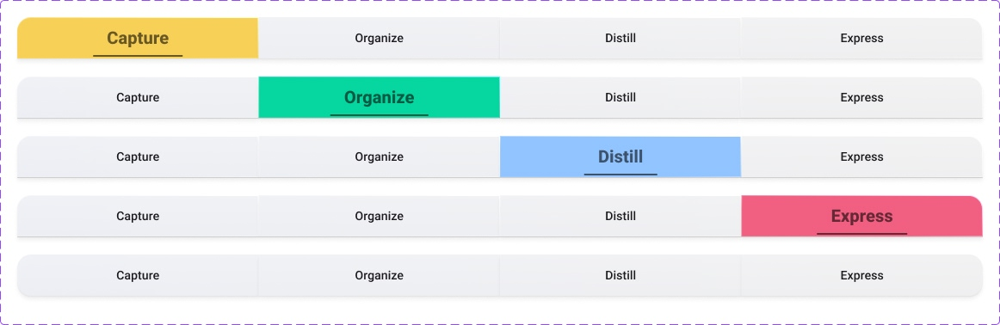
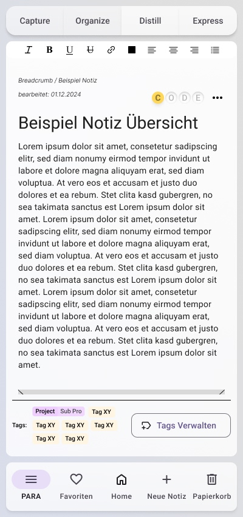
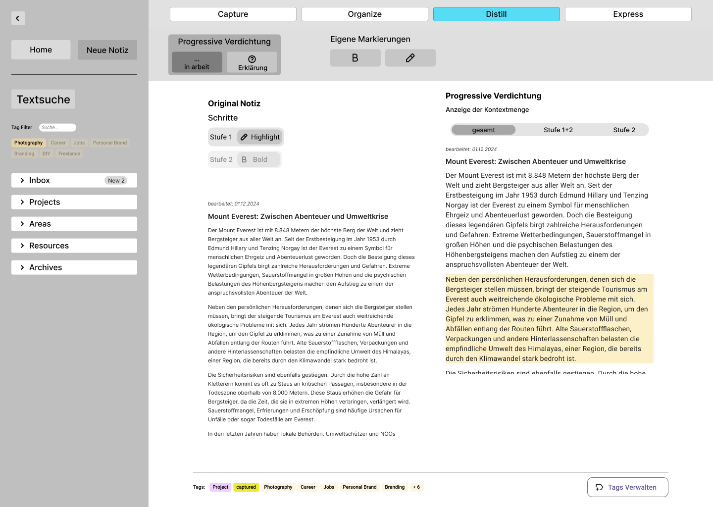
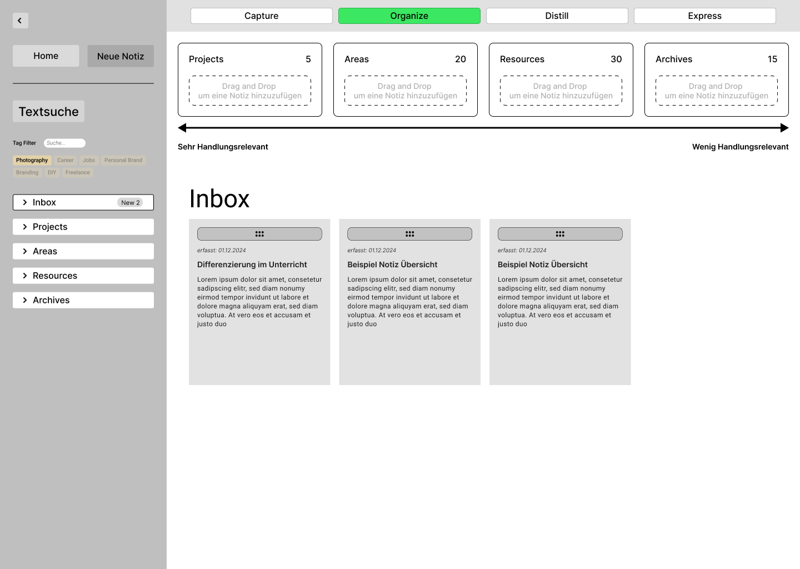

Lena, Lehrerin
Arbeitet mit vielen digitalen Materialien, bereitet Unterricht vor und entwickelt eigene Abläufe. Ihr Antrieb ist ein hohes Verantwortungsbewusstsein.
Eine Notizen-App, die nicht nur speichert, sondern Schritt für Schritt durch die Second-Brain-Methode führt.

6 Interviews, weitere Gespräche, kontextbezogene Beobachtung, Marktanalyse von 5 Notizen-Apps
User Stories, Personas, Problemdefinition in FigJam
Scribbles, Wireframes, Klickprototypen in Figma, Usability-Tests
High-Fidelity-Mockups für Desktop und Mobil, Design-System mit Komponenten
Second Brain ist ein Ansatz von Tiago Forte für persönliches Wissensmanagement. Die Idee: Unser Kopf ist zum Denken da, nicht zum Speichern. Notizen, Ideen und Quellen landen deshalb in einem digitalen System, dem man vertraut. Drei Methoden tragen das Konzept:
Ordnet Inhalte nicht nach Thema, sondern nach Handlungsrelevanz: Projects, Areas, Resources und Archives.
Beschreibt vier Arbeitsschritte: erfassen (Capture), ordnen (Organize), verdichten (Distill) und daraus Eigenes schaffen (Express).
Verdichtet eine Notiz in Stufen: erst markieren, dann das Wichtigste hervorheben, zuletzt eine Kernaussage formulieren.
Ich habe sechs aufgezeichnete Interviews und weitere freie Gespräche geführt, bewusst mit Menschen ohne Vorwissen zu Second Brain, aber mit viel Umgang mit Wissen in Beruf oder Alltag. Eine Person habe ich zusätzlich bei ihrer Arbeit mit Notion begleitet. Alle wollten Ideen schnell festhalten und Inhalte aus verschiedenen Quellen an einem Ort sammeln. Noch wichtiger war ihnen eine klare Struktur, um Notizen später wiederzufinden. Und mehrere beschrieben, dass sie in der Informationsflut nicht zum Wesentlichen durchdringen und gute Ideen dadurch verloren gehen.
Parallel habe ich Notion, Obsidian, OneNote, Apple Notizen und Google Notizen in der Praxis ausprobiert. In jeder dieser Apps lässt sich eine PARA-Struktur anlegen. Doch das erfordert Eigeninitiative und Wissen über die Methode, und kaum eine App unterstützt alle vier CODE-Schritte aktiv.
Die Apps können fast alles. Aber sie führen nicht. Wer die Methode anwenden will, muss sie selbst nachbauen.
Wer mit Second Brain startet, investiert zuerst: PARA anlegen, Regeln nachlesen, Details auf die eigene App übertragen. Erfassen und Ordnen gehen schnell. Verdichten und Ausdrücken dagegen brauchen Zeit und Methodenwissen. Gerade unter Zeitdruck greift man dann auf alte Gewohnheiten zurück. Dazu kommt die Unsicherheit, ob man die Methode überhaupt richtig anwendet. Die Entlastung, wegen der man angefangen hat, kommt so spät oder gar nicht.
Die Zielgruppe sind Wissensarbeiter:innen: Menschen, die beruflich oder privat ständig mit Informationen umgehen und dafür digitale Werkzeuge nutzen. Aus der Research sind drei neue Personas entstanden, die zwei frühere aus meinem Praktikum ergänzen. Jede steht für einen anderen Grund, ein Second Brain aufzubauen.
Arbeitet mit vielen digitalen Materialien, bereitet Unterricht vor und entwickelt eigene Abläufe. Ihr Antrieb ist ein hohes Verantwortungsbewusstsein.
Hat viel gleichzeitig im Kopf und auf der To-do-Liste, muss trotzdem kreativ sein. Sie sucht ständig nach Wegen, effektiver zu arbeiten.
Sammelt Inspirationen und Quellen, die ihn bei kreativer Arbeit unterstützen, und braucht sie im richtigen Moment wieder.
„Wie lässt sich die Anwendung der Second Brain Prinzipien innerhalb einer Notizen-App durch gezielte User Experience und User Interface Entwicklungen optimieren, sodass die Nutzergruppen effektiv ihre Ziele erreichen?“
Eine Notizen-App kann einen riesigen Funktionsumfang haben. Ich habe mich deshalb auf das konzentriert, was die Methode im Alltag scheitern lässt: die Struktur nach PARA und die aufwendigen Schritte wie das Verdichten. Und ich habe mit der Desktop-Version begonnen, weil dort die meiste Zeit verbracht wird und die komplexeren Arbeitsabläufe stattfinden. Die mobile Version folgt demselben Aufbau.
Nutzer:innen sollen die Methode nicht erst lernen müssen, um von ihr zu profitieren.
Die vier Bereiche stehen von Anfang an in der Seitenleiste. Neue Notizen landen in der Inbox und werden per Drag and Drop einsortiert. Ein Hilfe-Button erklärt PARA dort, wo man es braucht.
Jede geöffnete Notiz hat vier Tabs: Capture, Organize, Distill und Express. Jeder Bereich hat eine eigene Farbe und zeigt nur die Werkzeuge für diesen Schritt. Eine Statusanzeige auf jeder Notiz zeigt, welche Schritte erledigt sind.
Die Progressive Summarization startet per Knopfdruck und führt durch ihre Stufen: markieren, hervorheben, Kernaussage schreiben, abschließen. Jeder Schritt sagt, was jetzt zu tun ist.
Die ersten Ideen entstanden auf Papier. Schon das Scribble legt den Grundaufbau fest, der bis zum Schluss geblieben ist: links die Navigation mit PARA, rechts oben die vier CODE-Bereiche, darunter die Notiz.

Grundlayout, PARA-Sortierung und geführte Verdichtung, weil hier die größten Hürden lagen.
Werkzeuge für den Express-Schritt, Gamification, ein ausgebautes Such- und Tagging-System und eine KI, die Texte verdichtet.
Der Umfang einer vollständigen Notizen-App hätte die Arbeit gesprengt. Bei der KI-Verdichtung kam ein inhaltlicher Grund dazu: Sie würde den Lerneffekt nehmen, den das eigene Verdichten mit sich bringt.
Die Screens zeigen den finalen Stand nach den Usability-Tests. Gestaltet ist die App als High-Fidelity-Mockup in Figma, aufgebaut auf Material Design 3.





Getestet habe ich die Klickprototypen moderiert und remote mit [PRÜFEN · Anzahl] Testpersonen, jeweils in ihrer gewohnten Arbeitsumgebung, mit Bildschirmaufzeichnung und lautem Denken. Drei Aufgaben standen im Mittelpunkt: sich in der App orientieren und eine Notiz öffnen, eine gespeicherte Notiz progressiv verdichten und Notizen aus der Inbox in ein Projekt einsortieren.
Das Grundlayout verstanden alle Testpersonen in kurzer Zeit, und alle Aufgaben wurden abgeschlossen. Die Verdichtung konnten alle starten oder sich die Erklärung dazu anzeigen lassen.
Beim Verdichten war nicht allen klar, dass es ein Prozess in fester Reihenfolge ist: Schritt 2 geht erst nach Schritt 1. Und die zweite Spalte mit der verdichteten Fassung irritierte, weil sie am Anfang noch gar nichts zu bieten hatte.
Die Doppelansicht aus Original und Verdichtung von Anfang an. Sie stammt aus dem ersten Scribble, wird aber erst beim Formulieren der Kernaussage oder beim späteren Wiederöffnen einer Notiz wirklich gebraucht.
Eine Spalte, dafür eine Schrittleiste mit Fortschritt in Prozent und einer kurzen Anweisung pro Schritt. Weiter geht es per Button oder direkt über die Leiste. Die Detailstufen erscheinen erst im letzten Schritt. Die Leiste macht den Ablauf sichtbar und motiviert, die Methode bis zum Ende durchzuziehen.
Eine Methode braucht Führung im richtigen Moment, nicht alle Informationen auf einmal.

In der Inbox stand im Wireframe ein Pfeil von „sehr handlungsrelevant“ bis „wenig handlungsrelevant“. Einige hielten ihn für ein Bedienelement, und ohne PARA-Vorwissen blieben die Beschriftungen unklar. Im finalen Stand übernimmt ein Hilfe-Button diese Erklärung. Außerdem verwirrte in der Seitenleiste ein Button, der zwischen Textsuche und PARA-Struktur umschaltete: Er weckte andere Erwartungen. Suche und PARA stehen jetzt getrennt untereinander.

Die Tests und Gespräche mit der Zielgruppe deuten in eine klare Richtung: Wenn die Methode in die App eingebaut ist, wenden Nutzer:innen sie leichter und selbstverständlicher an. Die vorgegebene PARA-Struktur senkt den Einstiegsaufwand, die CODE-Bereiche machen die Arbeitsschritte verständlich, und die geführte Verdichtung bringt Nutzer:innen bis zu einem Ergebnis. Niemand muss mehr selbst prüfen, ob die Methode richtig angewendet wird.
Das Konzept funktioniert, wenn Nutzer:innen die Methode langfristig beibehalten, statt in alte Gewohnheiten zurückzufallen.
Genau das ließ sich im Rahmen der Arbeit nicht messen. Wissen aufzubauen und zu nutzen ist ein Prozess über längere Zeit. Belastbare Aussagen braucht es deshalb aus einem Langzeittest mit einer umgesetzten App.
Die App um die fehlenden Grundfunktionen ergänzen, technisch umsetzen und dann die langfristige Nutzung untersuchen, auch mit quantitativen Daten. Design-System und Komponenten aus Figma sind dafür als Grundlage angelegt. Die Ergebnisse sollten außerdem in weitere Projekte bei ISOGON einfließen.
Die schwierigste Entscheidung war, was ich nicht ausarbeite. Ein ursprüngliches Ziel, Vorgaben für die Datenbank, habe ich dafür bewusst gestrichen.
Text markieren und formatieren lässt sich in Figma nicht echt simulieren. Mit Workarounds und einer kurzen Erklärung vor dem Test blieb die Irritation gering.
Ein Ziel der Arbeit war, die technische Umsetzung gut vorzubereiten. Deshalb ist ein Design-System entstanden, das die Gestaltung festlegt und Entwickler:innen die Werte direkt liefert.
Um schnell zu Layouts und Prototypen zu kommen, habe ich auf dem offenen Design-System von Google aufgebaut und es um eigene Komponenten ergänzt.
Eine Primärfarbe für zentrale Aktionen wie Startseite, Neue Notiz und Hilfe, dazu je eine Palette für Capture, Organize, Distill und Express in zehn Abstufungen, angelegt als lokale Styles in Figma.
Seitenleiste, Notiz-Vorschau mit CODE-Status, Tabs und Buttons sind als Komponenten angelegt, gruppiert und beschriftet. Für den Prototyp kamen Komponenten mit Interaktionen dazu.
Jede Farbstufe trägt ihren Kontrastwert zu Schwarz und Weiß. So ist sofort sichtbar, welche Kombination die Anforderungen an Lesbarkeit erfüllt.
Ich bin Moritz, UX/UI- und Product Designer aus Kiel. Wenn du über das Second-Brain-Konzept oder eine offene Stelle sprechen möchtest, schreib mir.